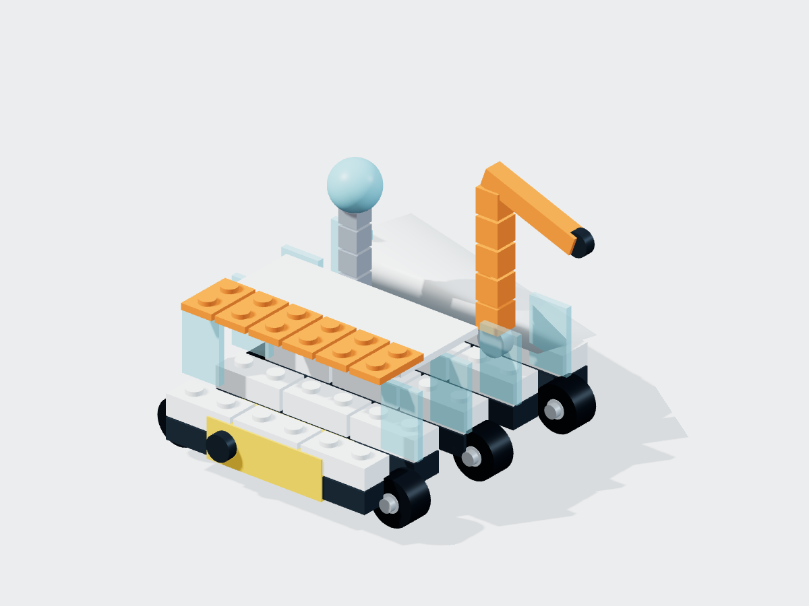

全过程前缀动力学
逐步装配时是否出现坠落、失稳或错误依赖
Which candidate module order remains dynamically supported at every prefix, and where does the other first fail?
- 对应能力
- 长程规划 · 前缀动力学 · 因果支撑
- 验证器
- Rapier 3D 刚体/关节/Shape Cast
模型实际输入
{
"candidates": [
{
"id": "plan-a",
"order": [
"chassis",
"battery",
"wheel-lf",
"wheel-lm",
"wheel-lr",
"wheel-rf",
"wheel-rm",
"wheel-rr",
"sensor-mast",
"sample-arm"
]
},
{
"id": "plan-b",
"order": [
"sensor-mast",
"chassis",
"battery",
"wheel-lf",
"wheel-lm",
"wheel-lr",
"wheel-rf",
"wheel-rm",
"wheel-rr",
"sample-arm"
]
}
],
"protocol": {
"gravity": 9.81,
"horizonSecondsPerPrefix": 1,
"unstableDisplacement": 0.35
}
}Oracle / 正确答案
{
"validPlanId": "plan-a",
"invalidPlanFirstFailure": 0
}模型回答与得分
| 模型 | 结果 | 回答 |
|---|---|---|
| Qwen3-0.6B 本地文本 | 通过 | {"validPlanId":"plan-a","invalidPlanFirstFailure":0} |
| GPT-4.1 mini | 通过 | {"validPlanId":"plan-a","invalidPlanFirstFailure":0} |
| Gemini 2.5 Flash | 通过 | {"validPlanId":"plan-a","invalidPlanFirstFailure":0} |